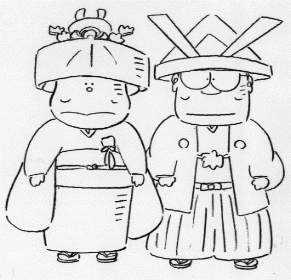

制作日誌 1999年7月
99.7.2（金）
・高畑監督が、鈴木プロデューサー、田辺さん等と全国行脚へ。羽田空港から北海道へ旅立っていった。
・夜、次作の作業に入っている2スタの親睦会と称し、屋上にてジンギスカンパーティが行われる。もちろん大好評。ところで昼休みに吉祥寺に肉を買いに行った某氏だが、以前羊肉を売っていた店屋が次々と取り扱うのをやめている現実に、「安くて美味いのになぜ…」と肩を落としていた。
99.7.3（土）
・昨日キャンペーンの為、札幌に行った高畑監督だが今日東京で取材が有る為、早速とんぼ帰り。せっかく東京が梅雨のこの時期、梅雨の無い北海道に行ったのに酷い。
・梅雨と言えば、昨日から天気がパッとせずぐずついている。今日も夕方土砂降りの夕立。帰社時間と重なった人は、ずぶ濡れ覚悟で帰路についていた。
・監督付（？）の田中さんも今日から制作休暇。お疲れ様でした。ゆっくり休んで疲れをとって下さい。
99.7.4（日）
・11時過ぎに一時的にジブリ一帯が停電になる。コンピューターをメインで使っているジブリでは、結構深刻な問題。当然の様にコンピューターから変な警告音が。折角の日曜なのに北河内さんに電話をして来てもらう。取りあえずは，大きな問題無しだがこれが山田くんの追い込みの時期だったらと考えるとちょっと怖い。
99.7.5（月）
・噂には、聞いていたが朝日新聞朝刊の「ののちゃん」に鈴木プロデューサー登場。顔も似てるが性格も・・・。更にさりげなく映画の宣伝もしてくれている。解らない人は、朝日新聞を見てね。
・新作の打ち合わせの為、制作休暇にも関わらず居村君出社。本人の知らない所で決まった打ち合わせの為、「1時間で帰る。」と言っていたが結局8時頃まで制作の連中とだべっていた。
99.7.6（火）
山田くんが終わり中の動画の手が空いているので、外から動画をとる事にした。作品は〇〇〇〇〇。ベテランの動画さんでさえキャラ表を見て「〇〇だー。」と結構大はしゃぎして喜んでいた。
制作の斎藤君は今あるキャンペーンにはまり込んでいる。毎日同じもを買って来ては、喜んだり怒ったりと大忙し。しかし今日で遂に後一種類になり、ここまで来たらと意気込んでいる。（何にはまっているか解りますよね。）
99.7.7（水）
今日は，七夕。思い起こせば一年前の社員旅行でホテルにあった笹に「山田くん無事完成」と書き、お願いした事が昨日の事の様に思い出される。
99.7.8（木）
制作と作画の人達で夕食を食べにでかける。スタッフ席（ほぼ制作）で評判の良い店に行ったのだが、余り良い評価を得られなかった。ジブリのスッタフの舌が肥えているのかはたまた只の味音痴なのか？（少なくとも私は、非常ーに美味いと思う。）
動画の仕事は、相変わらず「〇〇〇〇〇」流石にスピードも上がってきて1日で入った分がはけていく。動画のいれが追いつかない。嬉しいような困った様な変な感じがする。
制作の〇〇氏は、今日晴れて〇〇市民になれました。もっと早く手続きしろ。（無理か、忙しかったからな～。）
田中さんが制作休暇の間、日誌をつけている神村さん。気が緩んでしまい夏風邪をひいて水、木曜日とダウン。日誌をつけるという大役を仰せつかったにもかかわらず、この2日間のスタジオの様子がわからないため、スタッフにその日の出来事を聞きまわっていた。
99.7.9（金）
夏の賞与が全員に支給される。
99.7.10（土）
この夏、「山田くん」の最大の強敵「スターウォーズ」が公開される。徹夜組みも出て大いに盛り上がっているようだ。
一週間後は山田くんで徹夜組みだ！
99.7.11（日）
「山田くんナイター」が東京ドームで行われる。対戦カードは、巨人対広島。サンデー上原登板で巨人が勝つ！
99.7.12（月）
前回かなりうけが良かった〇〇〇の通販の麺類。又、注文表が来たので社内（制作関係）で注文をとる。しかし、〇〇氏は、未だに前回注文した分を食べきっておらず、ひんしゅくをかう。
99.7.13（火）
「〇〇〇〇」の動画を少し手伝ったら完成ビデオを貰ったので夕方6時から会議室で上映会を行う。シリーズ内の一回なので前を見ていないとよく解らないと思ったら、やっぱり話が良く見えなかった。しかし、作画レベルは良く、上映の後、話を聞いた数人が借りに来た。
99.7.14（水）
今日まで制作休暇の居村くんが、夕方出社。理由は「明日からくるのでその前に確認したい事等がある。」との事。う～ん制作の鏡だ。
朝から宮崎さんが撮影の奥井さんを金魚鉢に呼んでなにやら相談。どうなるのだろう新作は、・・・。
99.7.15（木）
居村君、無事？制作休暇終えて出社。
日本テレビの「企業Gメン」の取材がある。社内を山田くんのポチのきぐるみがうろうろしていた。やはり人間と同サイズのポチは、何度見ても可愛くない。しかも二本足で歩くし・・・。
99.7.16（金）
・明日から「ホーホケキョ となりの山田くん」いよいよ公開。
・○○の原動画スタッフ顔合わせが行われる。
99.7.17（土）
・今日から「ホーホケキョ となりの山田くん」公開。丸の内のピカデリー1にて高畑監督等の舞台挨拶が行われる。
・○○班処理打ち合わせが行われる。
99.7.19（月）
・来週の月曜日に放送予定する「スーパーテレビ」の編集作業に立ち会っている門屋氏が久しぶりにジブリに帰還する。一週間以上風呂に入っていないため、自分で自分の臭さに耐えられなくなったらしい。今週いっぱいは地獄が続くとのこと。
・△△班の処理打ち合わせが行われる。
・今年度の新人研修がひとまず終了。一人一人と会議室で面接。
99.7.21（水）
・○○班の作画打ち合わせが行われる。
・午後近所に落雷がアリ、一時的にジブリを含めた付近一体が停電となる。これにより、CG部では百瀬さんのマシンに異常発生。
99.7.22（木）
・現在作業が始められている○○等は、再びデジタルとなっているが、山田くんとはまた違った画面になっているため、メインスタッフが一堂に会しての処理打ち合わせの他にも、会社のあちこちで、画面処理についての議論が行われている。
・今日から今年の新人6人が、本番の仕事をはじめる。
・△△班の作画打ち合わせが行われる。
99.7.23（金）
・××班の処理打ち合わせが行われる。
・神村氏がジブリに入る（今までは出向だったのだ）事になり、家探しを始める。情報誌で、武蔵小金井に安くて広い部屋を見つけ、見に行くも、交通、買い物のの便のあまりの悪さに契約を断念。
99.7.24（土）
・今日で高畑監督、鈴木プロデューサーの全国行脚の旅が終了する。お疲れさまでした。
99.7.26（月）
・××班の作画打ち合わせが行われる。
・先週末から阿佐谷のラピュタ阿佐谷にて宮崎プロデュース、高畑監督による実写ドキュメンタリー「柳川掘割物語」が上映されているが、ジブリ内部でもこの映画をフィルムで見た人間は少なく、見に行きたがっている人は多い。
99.7.27（火）
・10時半から関連事業会議が行われる。
・石井君が「ホーホケキョ となりの山田くん」日本語字幕版の制作に追われている。８月初旬に全国いくつかの劇場で公開予定。詳細はホームページ上で近日公開予定。
・神村氏の夕食が今日もマック。バーガーとチーズバーガーが一つ百円もしないため、毎日のように一食につき五つも食べて腹をふくらませている。
99.7.28（水）
・11時より、第二スタジオ地下にある試写室において、今年度の新人研修卒業作品上映会が行われる。立ち見となる大盛況。
・宮崎監督から「次の作品が待っているのだ。メインスタッフルームをかたずけよ」との指令が出、必死にあとかたずけ。
・二馬力で、動画美術館の詳細説明会がある。宮崎監督自らが約二時間の説明を行う。
99.7.29（木）
・徳間書店にてインターネット連絡会議が開かれる。
・山田くんメインスタッフルーム解体。次作に備え机の移動が行われ、私の机も壁際へ。
・野見さん来社。次作の音楽打ち合わせ。
99.7.30（金）
・次作品の打ち入りパーティが開かれる。作品別にジブリバー、ジブリ屋上、二馬力の三ヶ所に別れて（その後入り乱れることになるが）、近所のコロッケ屋、ソーセージ屋（マイスター村上）、某人物お得意のジンギスカンと、お金をかけないパーティとなる。一番人気は、もちろんジンギスカン。
99.7.31（土）
・8月中に二スタを工事するため、二スタで次作の準備をしていたスタッフが一スタの旧山田メインスタッフコーナーへお引っ越し。
・吉祥寺で新人歓迎会が行われる。
| 次のページへ |
| 日誌索引へ戻る |